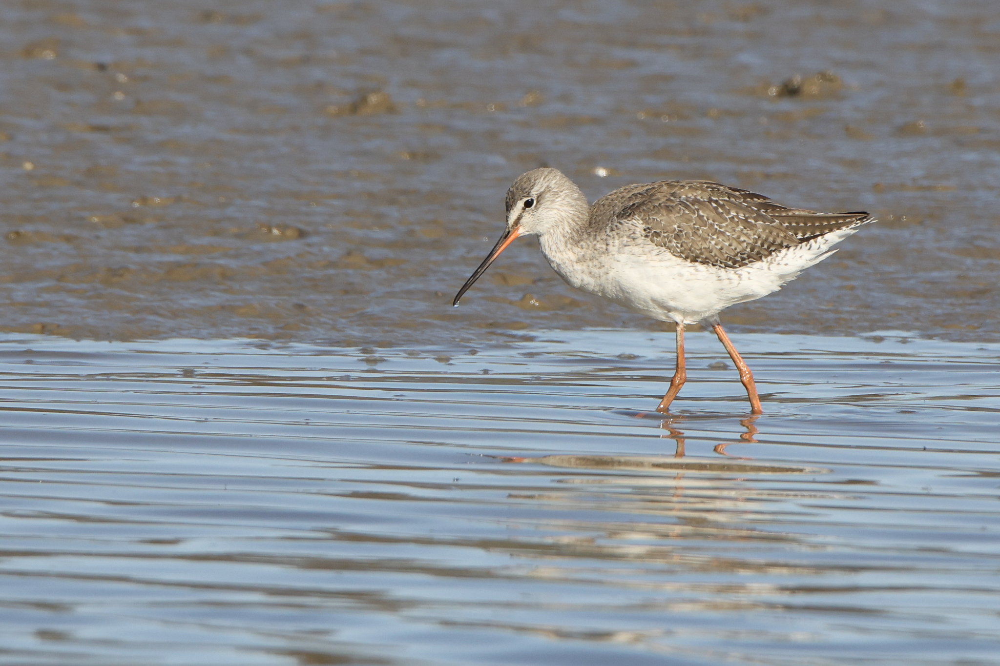

Tringa erythropus — du noir nuptial au gris hivernal
Identité et noms
Le Chevalier arlequin, Tringa erythropus, est distinct du Chevalier gambette, Tringa totanus. Tous deux appartiennent aux Scolopacidae, dans l’ordre des Charadriiformes. AviList 2026 conserve ce nom scientifique. Les références arabes utilisent différentes formes de « chevalier tacheté à pattes rouges » ; joindre le nom scientifique évite les confusions entre appellations locales. Ni les taches ni les pattes rouges ne suffisent à l’identifier : son plumage varie fortement avec la saison et d’autres limicoles ont les pattes rougeâtres.
Plumages nuptial, hivernal et juvénile
L’adulte nuptial devient remarquablement noir, ponctué de blanc sur le dessus. En hiver, il présente un dos gris, un dessous blanc et un sourcil blanc évident. Le jeune possède un dessus brun tacheté de clair et un dessous davantage barré ; certains caractères juvéniles s’effacent progressivement en automne. Les sexes se ressemblent hors reproduction, ce qui interdit un sexage certain sur une simple photographie hivernale. Le bec long et fin est sombre, avec du rouge à la base de la mandibule inférieure. Les pattes paraissent rougeâtres ou très sombres selon le plumage et la lumière ; le bec n’est pas entièrement rouge.
Le distinguer du Chevalier gambette
Par rapport au gambette, il paraît plus élancé, avec un bec et des pattes plus longs, et un plumage hivernal plus gris et plus pâle. En vol, l’absence de la large bordure blanche postérieure de l’aile du gambette est précieuse ; un coin blanc reste visible sur le dos et le croupion. Il peut se mêler aux gambettes et aux aboyeurs : un groupe familier n’est pas forcément monospécifique. Un oiseau gris de novembre ne doit pas être écarté parce qu’il diffère des adultes noirs photographiés au printemps.
Alimentation, reproduction et migration
Il fréquente mares, lacs peu profonds, vasières et eaux douces ou saumâtres, sans se limiter aux côtes marines. Il consomme insectes et larves, vers, crustacés et petits poissons ; il peut nager ou basculer vers l’avant pour atteindre ses proies. Il niche au sol dans les toundras et zones humides du nord eurasiatique proches des arbres. Le mâle assure l’essentiel de l’incubation, et les poussins se déplacent après l’éclosion : un partage égal des soins ne doit pas être supposé chez tous les oiseaux. L’hivernage s’étend de parties de l’Europe et de l’Afrique à l’Asie méridionale et orientale.
Répartition arabe et contexte saisonnier
Au Liban, le guide de 2026 décrit un passage peu nombreux et de rares présences hivernales et estivales sur les côtes, les îles et les zones humides. La liste de 2020 situait surtout le passage en mars-avril et de fin juillet à septembre ; le guide récent prévaut pour le statut actuel, sans impliquer un hivernage abondant. Le Koweït le signale peu nombreux au passage et en hiver ; Oman le donne commun dans les deux saisons. L’hivernage documenté comprend l’Égypte, le sud de l’Irak et le Yémen ; des comptages historiques confirment aussi sa présence au Maroc et en Libye. Un portrait de novembre convient donc aux zones humides arabes, sans généraliser l’abondance ni supposer les effectifs inchangés.
Conservation et observation
Son statut mondial est Préoccupation mineure. Intégrité des zones humides, qualité de l’eau et disponibilité des proies restent essentielles, face au drainage, aux remblais, à la pollution et au dérangement. Observer à distance permet la poursuite de l’alimentation ; noter date, lieu et plumage est utile, sans divulguer un site sensible si cela accroît la pression. Le statut mondial ne fixe pas la légalité de la chasse, et une observation isolée ne démontre pas une modification d’itinéraire migratoire.
Références
AviList Core Team — AviList v2026, 20 October 2026.
British Trust for Ornithology — BirdFacts: Spotted Redshank; RSPB — Spotted Redshank.
Naturalis Biodiversity Center — Birds of Europe: Tringa erythropus.
Blasco-Zumeta & Heinze — Spotted Redshank identification, ageing and sexing guide, Aranzadi.
Toochin — Status and occurrence of Spotted Redshank in British Columbia, E-Fauna BC, University of British Columbia.
Ramadan-Jaradi et al. — Updated checklist of the birds of Lebanon, Sandgrouse 42, 2020.
Kuwait Ornithological Rarities Committee — Kuwait Bird List; Kuwait Birds — Spotted Redshank.
Birds of Oman — national species database.
Waders wintering in Morocco, Wader Study Group Bulletin 96, 2001; Results of the seventh winter waterbird census in Libya, January–February 2011.
Ramadan-Jaradi & Itani — Birds of Lebanon: A Photographic Guide to 409 Species, second edition, UNDP, June 2026.
Photo : Paulo Caseirito — CC0-1.0.